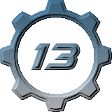

Welcome to my website!
About:
Hello there. My GitHub username is sergeirocks100, and you are currently viewing my website.
I am relatively familiar with BYOND, and i have been contributing on-and-off to /tg/station and Skyrat for about 3 years, in addition to running my own codebase, called GearStation.
I also recently became involved with Cataclysm: Dark Days Ahead, and i made my first pull request there in June of this year.
Projects:
 GearStation:
GearStation is an SS13 codebase that i run.
I first forked GearStation from /tg/ in June of 2021, because i wasn't happy with the creative direction that /tg/ was going in, and i wanted to do something different.
Even though GearStation's player count has never entered the double digits, and i had to rebase the code at the end of last year because of compatibility concerns with BYOND 515, it has been running strong for over 2 years, and i hope i can keep it running for many years to come.
Death March:
Death March is a FPS game that i developed in the GZDoom engine.
I created the original version of the game in 7 days, after being inspired by Nash Muhandes' ElderJam.
While i've been a little too preoccupied with other things to work on it, which is why it hasn't been updated since May of last year, i do want to continue work on it when i'm in a better situation to do so.
Contact:
My Discord username is sergeirocks100#2456/sergeirocks100.
Here are the discords i'm in:
The GearStation discord.
The Skyrat discord.
The Manuel discord.
The /tg/ discord.
The coderbus.
If you aren't in at least one of these discords already, you must join one in order to contact me, because i don't want to be in dozens of discords for codebases i don't play.